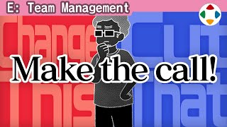
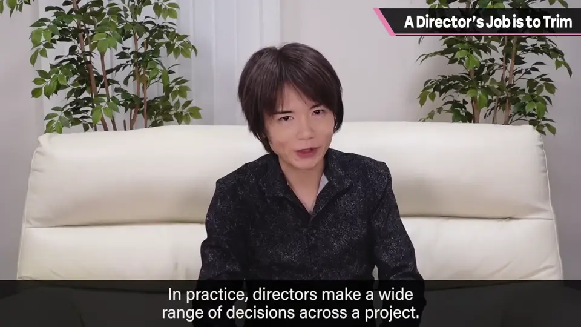
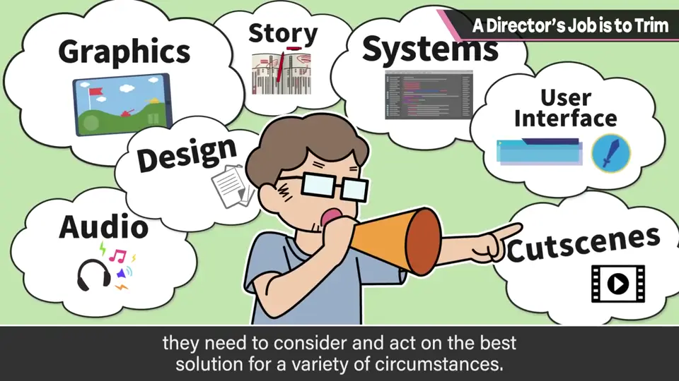
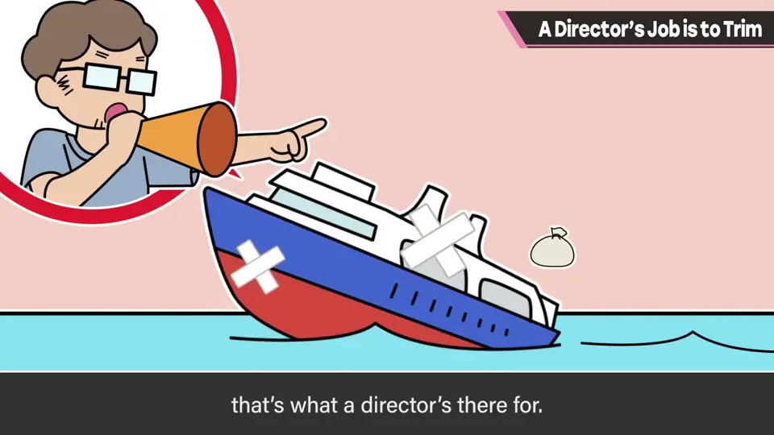
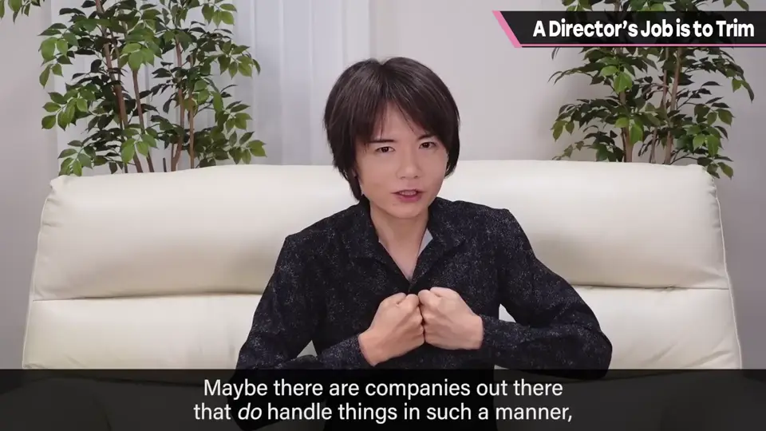
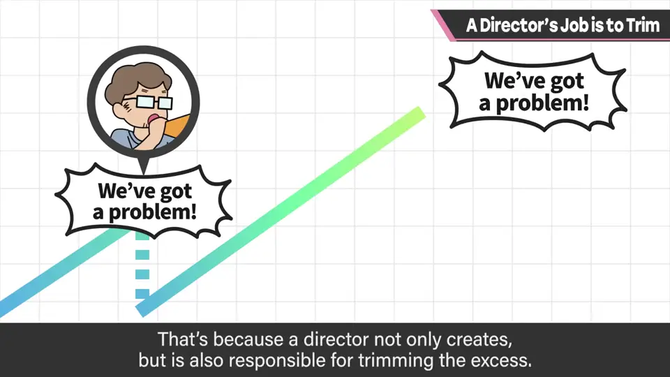
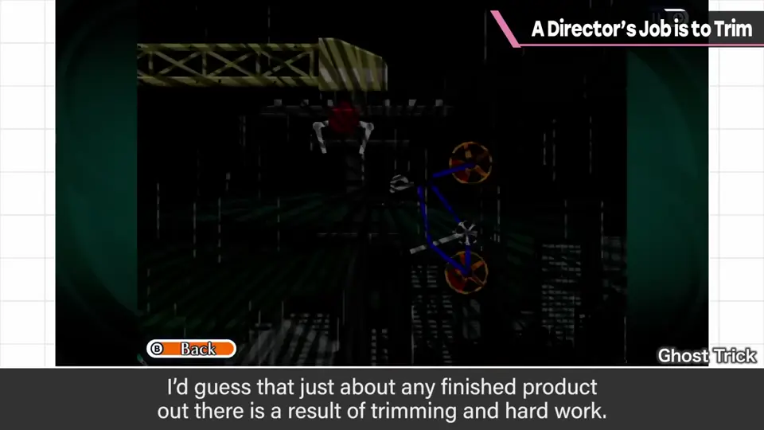
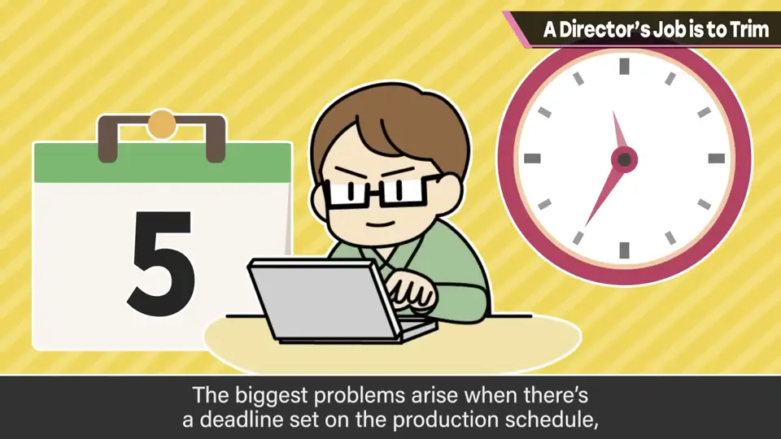
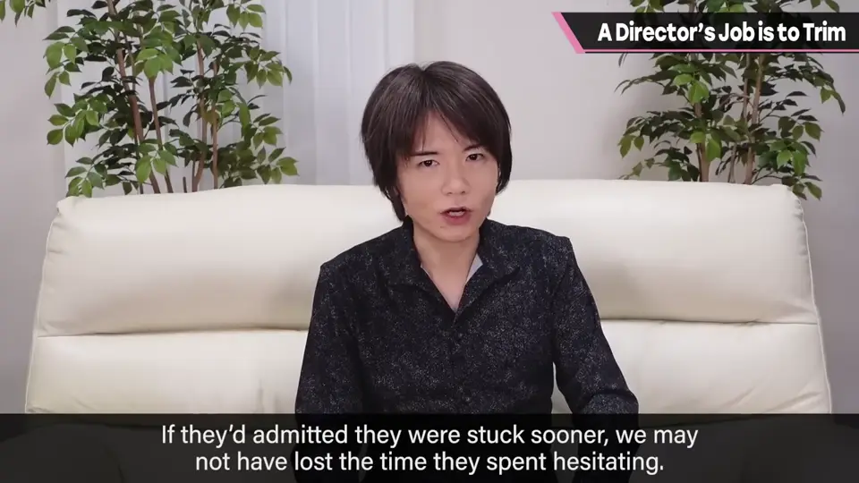

速览
Direction 意为方向，总监就是决定方向的人；实际上总监要做各种决策：怎样做才能让项目有好结果，从瞬间与长期的各种情况考虑裁量，并提前布局。这不一定都让用户高兴：电脑的极限、交期延误、工作量膨胀等，计划不如预期的事堆积如山。这时预见损失、扔掉太重或可能起火的货物、修正航线，也是总监的工作。也许大家的印象更多是：考虑成本的制作人和考虑品质、乐趣的总监边吵边找折中方案——也许确实有那样推进的地方——但由总监理解问题并调整，还是最快的。总监是做东西的人，也是切掉浪费的人：凡是确实完成的作品，大概都是削减、周旋、苦思之后才成为现在的样子（画面中示意《旺达与巨像》）。为此需要尽早获得准确的信息：信息全都是判断材料，前提错了就全都错。最困扰的是：本来在制作计划里，但一直不顺利，拖拖拉拉花时间，到了最后关头才说「做不出来」。途中来商量的话也许能给出合适的修正，早点撤的话也许就不会有犹豫的时间。团队要合作，做到迅速的接力传棒——包括遇到困难在内，信息要准确。
1. 决定方向的人 0:03
Direction 意为方向，总监就是决定方向的人。实际上，总监要做各种各样的决策。


怎样做才能让项目有好结果？从瞬间与长期的各种情况出发，考虑裁量并提前布局。
2. 扔掉货物、修正航线 0:30
这些决定不一定都让用户开心：电脑的极限、交期延误、工作量膨胀……计划不如预期的事堆积如山。

3. 总监自己调整最快 0:54
也许大家的印象更多是：考虑成本的制作人与考虑品质和乐趣的总监边吵边找折中方案。也许确实有那样推进的地方——

4. 也是切掉多余的人 1:12
总监是做东西的人，也是切掉浪费的人。


凡是确实完成的作品，大概都是这样：削减、周旋、苦思之后，才成为现在的样子。
5. 需要准确而尽早的信息 1:30
为此，需要尽早获得准确的信息。信息全都是判断材料，前提错了就全都错。
最困扰的是：本来在制作计划里，但一直不顺利，拖拖拉拉花时间，到了最后关头才说「做不出来」。


途中来商量的话，也许能给出合适的修正；早点撤的话，也许就不会浪费犹豫的时间。
自测题
1. 计划不如预期时，总监要做什么？
预见损失，扔掉太重或会起火的「货物」，修正航线。 0:30
2. 樱井为什么说总监自己调整最快？
与其制作人与总监边吵边折中，不如由总监理解问题并直接调整。 0:54
3. 总监最困扰的是什么情况？
计划内的东西一直不顺利却拖着，最后关头才说做不出来。 1:38